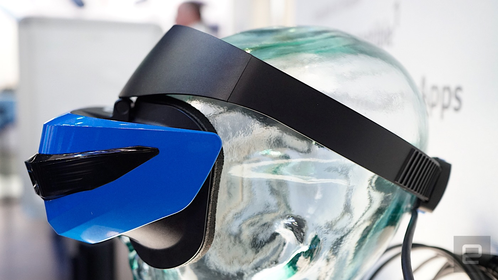
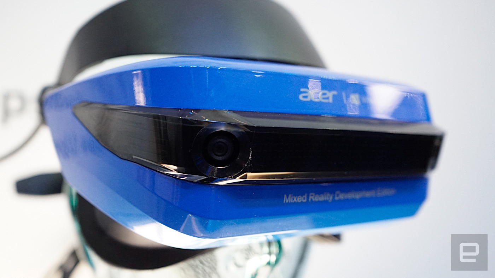
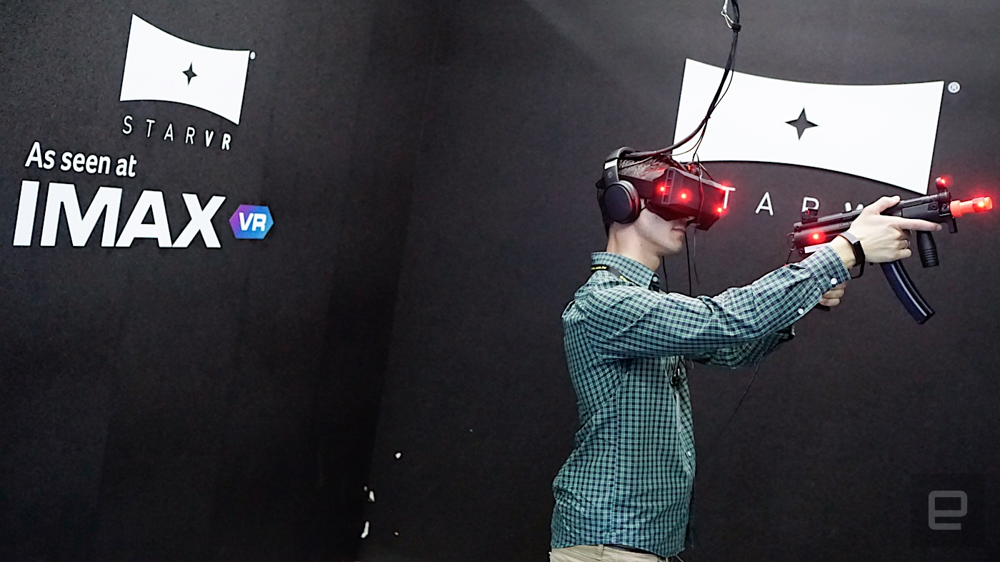
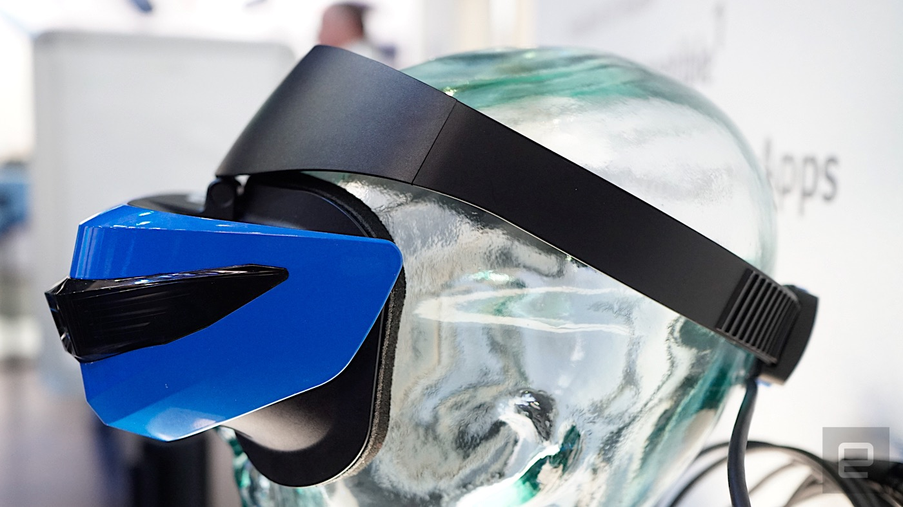
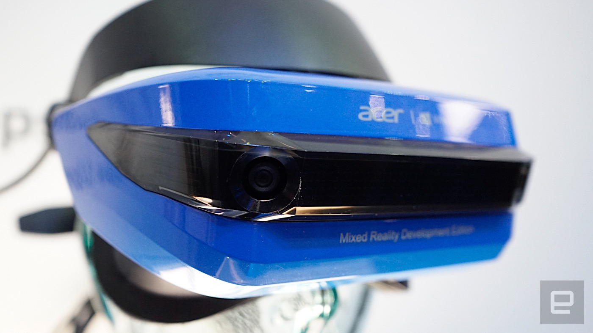
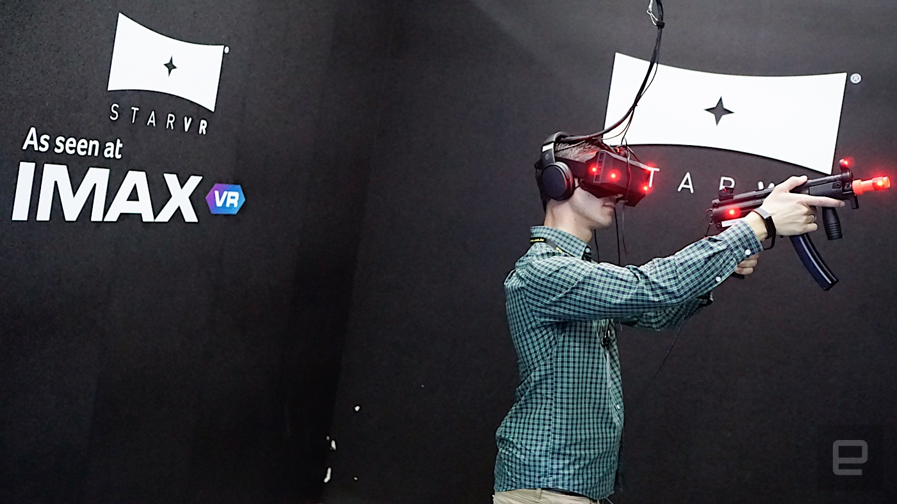

宏碁版 Windows Holographic VR 设备动手玩
同场加映，Acer 與 Starbeeze 合作打造的 StarVR 动手玩心得。
Ross Wang
2017 年 5 月 30 日, 傍晚 08:04
 近一年来突然发力进攻 VR 虚拟实境与 MR 混合实境领域的 Acer，在今年的 Computex 上，我们也看到了来自两边的成果。首先，针对他们跟着一票厂商一起推出的 Windows Holographic VR 头戴设备的部分，这次虽然 Acer 有展出设备的外观并且提供体验，不过很可惜的，这个开发版本还无法拍摄体验相关的图片，不过就心得的部分还是可以讲一讲。
如同先前我们的形容，这款十分接近于 PSVR 外观的 HMD，大致上的戴法与其真的相当接近，不过 Acer 倒是针对正面眼镜的部分可以上掀来临时看看手机或搞清楚周遭状况的设计相当自豪。往下阅读 Acer Windows Holographic VR HMD 与 StarVR 的游戏心得。

Acer 在体验的开始之前，一直跟我们解释 MR 的特殊之处，不过实际上进入体验空间所玩到还是比较偏向 VR 的部分，并没有任何现有空间中的现实事物（自己的手脚之类的）「混进」这次的体验之中。Acer 的头戴设备示范使用的是操作设备是 Xbox 的摇杆，可以用来移动、改变方向或者是选择物品。看到这里，大家应该会疑惑，这个支持六向与镜头空间定位的 HMD，不是应该要能够达到房间规模的虚拟实境体验吗？
事实上，它的确是能有这样的效果，而且坦白讲，在没有灯塔做为精确定位参考点，甚至现场就连空间辨识的预扫都没做的状态之下，这款头戴设备就已经可以通过其上的感测器达到很不错的 VR 定位效果，并懂得提醒你避开大范围的墙壁。一开始我们仅有设定基本的身高数据，就可以开始进行体验了。这真的相当厉害，也代表着这样的设备将不受灯塔范围的限制（不过还是要看连接着电脑的线的长度了）。

Acer 的头戴设备可以戴着眼镜使用，不过一样还是会有闷热的起雾问题。分辨率部分个人觉得不差，因为在虚拟场景中的屏幕文字都可以看得清楚，相关物件也满锐利的。根据官方人员的讲法，这款头戴设备的更新率最高可以达到 90fps，而在观看符合这样规格的 VR 视频时，就能提供较为顺畅不太会造成不适应的问题发生。
整体而言个人对于 Acer HMD 的体验算是感觉相当正面的，毕竟仅需单机 US$299 / 含控制器 US$399 的售价来讲，就能拥有可以在虚拟实境中走动的体验，的确是有着相当的吸引力。更别说，后续如果能有更多 MR 混合实境支持的话，应该也将有着更多的使用弹性。

小编这次也有玩到 Acer 现阶段仍在开发当中的 StarVR 虚拟实境设备。必须说，他们所强调的广角效果真的非常不错，拿来玩枪战游戏基本上一般人视角范围内能看到的敌人都能察觉，玩起来相当痛快。只可惜现阶段这个开发的版本还不具备有调整焦距的功能，也不建议带着眼镜体验，所以有点不太能确定 StarVR 的分辨率是否足够。这些也许还有待后续正式版本再来体验尝试了。
近一年来突然发力进攻 VR 虚拟实境与 MR 混合实境领域的 Acer，在今年的 Computex 上，我们也看到了来自两边的成果。首先，针对他们跟着一票厂商一起推出的 Windows Holographic VR 头戴设备的部分，这次虽然 Acer 有展出设备的外观并且提供体验，不过很可惜的，这个开发版本还无法拍摄体验相关的图片，不过就心得的部分还是可以讲一讲。
如同先前我们的形容，这款十分接近于 PSVR 外观的 HMD，大致上的戴法与其真的相当接近，不过 Acer 倒是针对正面眼镜的部分可以上掀来临时看看手机或搞清楚周遭状况的设计相当自豪。往下阅读 Acer Windows Holographic VR HMD 与 StarVR 的游戏心得。

Acer 在体验的开始之前，一直跟我们解释 MR 的特殊之处，不过实际上进入体验空间所玩到还是比较偏向 VR 的部分，并没有任何现有空间中的现实事物（自己的手脚之类的）「混进」这次的体验之中。Acer 的头戴设备示范使用的是操作设备是 Xbox 的摇杆，可以用来移动、改变方向或者是选择物品。看到这里，大家应该会疑惑，这个支持六向与镜头空间定位的 HMD，不是应该要能够达到房间规模的虚拟实境体验吗？
事实上，它的确是能有这样的效果，而且坦白讲，在没有灯塔做为精确定位参考点，甚至现场就连空间辨识的预扫都没做的状态之下，这款头戴设备就已经可以通过其上的感测器达到很不错的 VR 定位效果，并懂得提醒你避开大范围的墙壁。一开始我们仅有设定基本的身高数据，就可以开始进行体验了。这真的相当厉害，也代表着这样的设备将不受灯塔范围的限制（不过还是要看连接着电脑的线的长度了）。

Acer 的头戴设备可以戴着眼镜使用，不过一样还是会有闷热的起雾问题。分辨率部分个人觉得不差，因为在虚拟场景中的屏幕文字都可以看得清楚，相关物件也满锐利的。根据官方人员的讲法，这款头戴设备的更新率最高可以达到 90fps，而在观看符合这样规格的 VR 视频时，就能提供较为顺畅不太会造成不适应的问题发生。
整体而言个人对于 Acer HMD 的体验算是感觉相当正面的，毕竟仅需单机 US$299 / 含控制器 US$399 的售价来讲，就能拥有可以在虚拟实境中走动的体验，的确是有着相当的吸引力。更别说，后续如果能有更多 MR 混合实境支持的话，应该也将有着更多的使用弹性。

小编这次也有玩到 Acer 现阶段仍在开发当中的 StarVR 虚拟实境设备。必须说，他们所强调的广角效果真的非常不错，拿来玩枪战游戏基本上一般人视角范围内能看到的敌人都能察觉，玩起来相当痛快。只可惜现阶段这个开发的版本还不具备有调整焦距的功能，也不建议带着眼镜体验，所以有点不太能确定 StarVR 的分辨率是否足够。这些也许还有待后续正式版本再来体验尝试了。
By Ross Wang
从 Nikon D50 开始摸索摄影，一个不小心考上了国内少数的摄影学系后，便时常摸到很多摄影器材，喜欢摸索使用不同器材感受其特性。赞叹科技进步对于摄影产业造成的改变与帮助，也深刻体会影像与科技的不可分割。对于科技产品与好玩小物也极具兴趣。喜好拍摄的题材是街拍摄影，喜欢在喧闹的街道中探索鲜为人所注意的美丽景致。每天带着相机不放弃任何影像片段，如同每天将科技资讯挖掘介绍给大家一样，希望能透过自己不同的观察视野，让更多人了解与爱上科技。